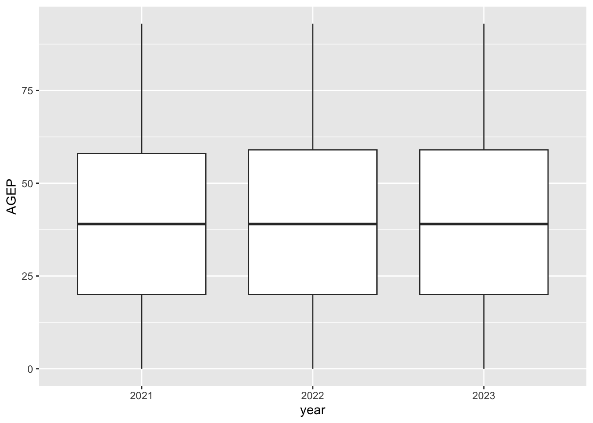
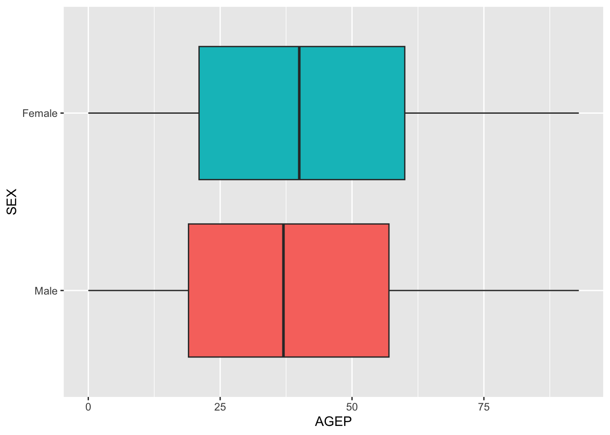

# Function to `GET` a PUMS `variables.json` endpoint
get_pums_variables <- function(url, vars_to_keep) {
var_info <- httr::GET(url) # Contact API
parsed_vars <- jsonlite::fromJSON(rawToChar(var_info$content)) # Parse the raw JSON
parsed_vars$variables[vars_to_keep]
}
# Variables found in all four years
common_vars <- c("AGEP", "GASP", "GRPIP", "JWAP", "JWDP", "JWMNP",
"PWGTP", "FER", "HHL", "SCH", "SCHL", "SEX",
"REGION", "DIVISION")
# ST/STATE variable changes by year, so append to each year's variable list
vars_2021 <- c(common_vars, "ST")
vars_2022 <- c(common_vars, "ST")
vars_2023 <- c(common_vars, "STATE")
vars_2024 <- c(common_vars, "STATE")
# URLs
url_2021 <- "https://api.census.gov/data/2021/acs/acs1/pums/variables.json"
url_2022 <- "https://api.census.gov/data/2022/acs/acs1/pums/variables.json"
url_2023 <- "https://api.census.gov/data/2023/acs/acs1/pums/variables.json"
url_2024 <- "https://api.census.gov/data/2024/acs/acs1/pums/variables.json"
# Build one list per year, then merge into a single list
pums_variables <- list(
"2021" = get_pums_variables(url_2021, vars_2021),
"2022" = get_pums_variables(url_2022, vars_2022),
"2023" = get_pums_variables(url_2023, vars_2023),
"2024" = get_pums_variables(url_2024, vars_2024)
)
# Save list as an .rds in the `data` folder
saveRDS(pums_variables, file = "data/pums_variables.rds")ST 558 Project 1
Abstract
The purpose of this report is to write R functions that query the PUMS Census API then summarize and plot the returned data.
Intro
In this project we will query the Public Use Microdata Sample (PUMS) Census API. This API provides pseudo person-level data from the American Community Survey. We will focus on retrieving, summarizing, and plotting data from four survey years: 2021, 2022, 2023 and 2024. In Part 1 we write functions to query the API and return tibbles. In Part 2 we write custom summary() and plot() functions to generate results.
Part 1: Data Processing
Parsing Variable Values
Each survey year from the Census API has its own variables.json endpoint that lays out each variable used and their respective definitions. While there is plenty of overlap year-to-year, important differences exist that we must account for when parsing variable values from the JSON files. In this first step, we build a function that retrieves these files, extracts only the variables relevant to our analysis, and stores the result so we can reference it later.
Parsing API Data
With our variable dictionaries saved, we can move on to querying the actual data. Before writing the main querying function, we introduce two helper functions to handle the conversions it will need.
The first helper handles the time variables JWAP (time of arrival at work) and JWDP (time of departure for work). The API returns these as codes for time ranges, not actual clock time values. Therefore, our helper looks up each code’s label, divides it into a start and an end time string, converts both to time values with lubridate, and returns the midpoint of the range. Codes whose label isn’t a time range (e.g. “N/A” code) are returned as NA.
Importantly, the dictionary codes for these two variables have a fixed-width of three characters but the API drops leading zeros so we must pad them where applicable (e.g. "7" to "007"). The exception is the “N/A” code which is simply "0".
# Helper function: Handling the time-coded variables (JWAP/JWDP)
parse_pums_time <- function(codes, code_labels) {
padded_codes <- ifelse(codes == "0", "0", # If 0, keep (it's the N/A code)
formatC(as.integer(codes), width = 3, flag = "0")) # Otherwise convert int and insert 0s to get fixed-width
labels <- code_labels[padded_codes] # Match padded code to dictionary label
# Logical vector using language ("to") to identify time-range observations
has_range <- !is.na(labels) & grepl(" to ", labels, fixed = TRUE)
# Isolate times
starts <- trimws(gsub("\\.", "", sub(" to .*$", "", labels[has_range]))) # Before "to"
ends <- trimws(gsub("\\.", "", sub("^.*? to ", "", labels[has_range]))) # After "to"
# Convert string times to datetime objects
start_times <- lubridate::parse_date_time(starts, orders = "IMp", tz = "UTC")
end_times <- lubridate::parse_date_time(ends, orders = "IMp", tz = "UTC")
# Compute midpoint time
mid_times <- start_times + (end_times - start_times) / 2
# Initialize empty datetime vector
result <- as.POSIXct(rep(NA, length(labels)), tz = "UTC")
# Fill it in with midpoint values
result[has_range] <- mid_times
# Return vector
result
}The second helper handles our categorical variables. Like the time variables above, the categorical variables are delivered as raw codes from the API, so the helper replaces them with their corresponding labels (accounting for year-to-year differences). It then converts the result into a factor whose levels mimic the order of the original codes.
These codes have the same leading-zero problem as the time variables, though without a fixed-width and not quite as pervasive. So we must manually grab the proper width each time before padding. This function will be called for every categorical variable requested by the user.
# Helper function: Replaces categorical raw character codes with corresponding label
pums_to_factor <- function(codes, code_labels) {
# Width used by this variable's dictionary keys, excluding "0" (N/A)
pad_width <- max(nchar(setdiff(names(code_labels), "0")))
# Add leading zeros; except "0" (N/A) is never padded
padded_codes <- ifelse(codes == "0", "0", formatC(as.integer(codes), width = pad_width, flag = "0"))
ordered_codes <- names(code_labels)[order(as.numeric(names(code_labels)))] # Numerical ordering of codes
ordered_labels <- unname(code_labels[ordered_codes]) # Labels ordered by their codes
# Return categorical factor
factor(unname(code_labels[padded_codes]), levels = ordered_labels)
}Now that both helpers have been established, we can write the main query function that will utilize them. This function lets the user choose what variables to request from the API, ensures these are valid choices, and returns a tibble. Note that we are only parsing a specific subset of the entire list of variables (see code below). If the inputs pass all checks, then the API URL is built and our API key makes the request. From there, the function converts the JSON into a cleaned tibble with a "census" class.
# Function to query the PUMS API (year, variables, and geography) then return a parsed tibble.
query_pums_data <- function(year = 2024,
numeric_vars = "AGEP",
categorical_vars = "SEX",
geography = "State",
geo_subset = NULL) {
# Validate year
valid_years <- c(2021, 2022, 2023, 2024)
if (length(year) != 1 || !(year %in% valid_years)) { # Not exactly 1 year OR not in list
stop("Error: `year` must be 2021, 2022, 2023, or 2024.")
}
# Validate numeric variables
valid_numeric <- c("AGEP", "GASP", "GRPIP", "JWAP", "JWDP", "JWMNP")
if (length(numeric_vars) < 1) { # Empty input
stop("Error: At least one numeric variable (other than PWGTP) must be specified.")
}
if (!all(numeric_vars %in% valid_numeric)) { # Checking if any vars are invalid
stop("Error: Invalid numeric variable(s) provided. Valid options are: AGEP, GASP, GRPIP, JWAP, JWDP, and JWMNP.")
}
# PWGTP always returned
numeric_vars <- unique(c(numeric_vars, "PWGTP"))
# Validate categorical variables
valid_categorical <- c("FER", "HHL", "SCH", "SCHL", "SEX")
if (length(categorical_vars) < 1) { # Empty input
stop("Error: At least one categorical variable must be specified.")
}
if (!all(categorical_vars %in% valid_categorical)) { # Checking if any vars are invalid
stop("Error: Invalid categorical variable(s) provided. Valid options are: FER, HHL, SCH, SCHL, and SEX.")
}
# Validate geography level
valid_geo <- c("Region", "Division", "State")
if (length(geography) != 1 || !(geography %in% valid_geo)) { # Not exactly 1 level OR not in list
stop("Error: `geography` must be exactly Region, Division, or State.")
}
# Geo_subset default
default_geo_subset <- list(Region = "3", Division = "5", State = "37") # North Carolina
if (is.null(geo_subset)) { # Empty input
geo_subset <- default_geo_subset[[geography]] # Picks the correct default value based on the chosen geo
}
geo_for_name <- tolower(geography) # Convert to lowercase for URL syntax
geo_var_name <- switch(geography, # Col name to return
"Region" = "REGION",
"Division" = "DIVISION",
"State" = if (year %in% c(2021, 2022)) "ST" else "STATE"
)
# String for the URL `for=`
geo_value <- if (identical(geo_subset, "all")) "*" # All values (API syntax)
else geo_subset # User's specific choice
# Variables list
get_vars <- unique(c(numeric_vars, categorical_vars, geo_var_name))
# URL
base_url <- paste0("https://api.census.gov/data/", year, "/acs/acs1/pums")
url <- paste0(
base_url,
"?get=", paste(get_vars, collapse = ","),
"&for=", geo_for_name, ":", geo_value,
"&key=", census_key
)
# Contact API endpoint
resp <- httr::GET(url)
raw_data <- jsonlite::fromJSON(rawToChar(resp$content))
# Initialize tibble
pums_tibble <- raw_data |>
tibble::as_tibble(.name_repair = "minimal") |> # Prevent auto-naming
janitor::row_to_names(row_number = 1) # First row is col headers, removed from data
pums_tibble[[geo_for_name]] <- NULL # Drop the geography duplicate column
# Load RDS and convert year to char
variable_info <- readRDS("data/pums_variables.rds")
year_info <- variable_info[[as.character(year)]]
# Convert numeric variables to num or POSIXct
time_vars <- c("JWAP", "JWDP") # Arrival/departure times
for (var in numeric_vars) {
if (var %in% time_vars) { # is the variable time-coded?
code_labels <- unlist(year_info[[var]]$values$item) # Table of codes and labels
pums_tibble[[var]] <- parse_pums_time(pums_tibble[[var]], code_labels) # Helper function
} else {
pums_tibble[[var]] <- as.numeric(pums_tibble[[var]]) # Otherwise numeric
}
}
# Convert categorical variables to labeled factors
for (var in categorical_vars) {
code_labels <- unlist(year_info[[var]]$values$item) # Table of codes and labels
pums_tibble[[var]] <- pums_to_factor(pums_tibble[[var]], code_labels) # Helper function
}
# Adding the "census" class to the tibble
class(pums_tibble) <- c("census", class(pums_tibble))
# Return tibble
pums_tibble
}Let’s show some examples of how this querying process might look for a user.
This example will not use default variables. We will use GASP (gas cost) and JWMNP (travel time to work) as numeric variables, SCHL (educational attainment) as a categorical variable, and the Pacific census division (division code "9") for the 2023 survey year.
# Example Query
example_single_year <- query_pums_data(
year = 2023,
numeric_vars = c("GASP", "JWMNP"),
categorical_vars = "SCHL",
geography = "Division",
geo_subset = "9"
)
example_single_year# A tibble: 539,966 × 5
GASP JWMNP PWGTP SCHL DIVISION
<dbl> <dbl> <dbl> <fct> <chr>
1 3 15 85 1 or more years of college credit, no degree 9
2 3 0 26 Regular high school diploma 9
3 3 10 60 1 or more years of college credit, no degree 9
4 3 0 27 Grade 10 9
5 3 0 23 Bachelor's degree 9
6 3 0 99 Bachelor's degree 9
7 3 0 5 Grade 5 9
8 3 10 51 Associate's degree 9
9 3 0 74 1 or more years of college credit, no degree 9
10 3 0 47 Bachelor's degree 9
# ℹ 539,956 more rowsSee that PWGTP is printed even though we only specified GASP and JWMNP. This is because we append PWGTP to the numeric_vars list so it’s always returned. SCHL is a factor with its levels pulled from the 2023 variable dictionary instead of raw numeric codes, and the DIVISION column reflects the geography we subset on.
We also setup our function to validate the user inputs and print an error message when appropriate. For example, requesting a survey year outside 2021–2024 yields the following:
query_pums_data(year = 2020)Error in query_pums_data(year = 2020): Error: `year` must be 2021, 2022, 2023, or 2024.Combining Years
Notice that the query function above only accepts one year as an argument. Clearly this is not ideal, so we expand on this by building another query function below that can take a vector of years. This new query still relies on the previous function to go through each year’s call. Our query below accounts for variable differences between years, makes a year column identifying the source year for a given row, and then stacks the results into a tibble while ultimately preserving the "census" attribute.
# Function to query multiple data years then return a tibble.
query_pums_multi_year <- function(years, # Vector of years (unlike query_pums_data)
numeric_vars = "AGEP",
categorical_vars = "SEX",
geography = "State",
geo_subset = NULL) {
# Loop over each element of `years`, applies function to assemble list of tibbles
results <- lapply(years, function(yr) {
result <- query_pums_data( # A year's raw tibble
year = yr,
numeric_vars = numeric_vars,
categorical_vars = categorical_vars,
geography = geography,
geo_subset = geo_subset
)
# Changing state variable names to all be "STATE" (2021/2022)
if ("ST" %in% names(result)) {
names(result)[names(result) == "ST"] <- "STATE"
}
# Record which survey year this data came from
result$year <- yr
# Strip the "census" class before combining (for dplyr)
class(result) <- class(result)[class(result) != "census"]
# Return a year's tibble
result
})
# Combine (vertically)
combined <- dplyr::bind_rows(results)
# Adding back the "census" class to the combined result
class(combined) <- c("census", class(combined))
# Return tibble
combined
}Let’s look at an example of combining several years (2021-2023) into one tibble. We can use this as an opportunity to check the state variable change (ST to STATE).
# Example Query
example_multi_year <- query_pums_multi_year(
years = c(2021, 2022, 2023),
numeric_vars = "AGEP",
categorical_vars = "SEX"
)
example_multi_year# A tibble: 325,487 × 5
AGEP PWGTP SEX STATE year
<dbl> <dbl> <fct> <chr> <dbl>
1 21 78 Male 37 2021
2 58 9 Female 37 2021
3 20 32 Female 37 2021
4 40 6 Female 37 2021
5 21 119 Male 37 2021
6 20 65 Male 37 2021
7 41 11 Male 37 2021
8 18 67 Female 37 2021
9 19 19 Male 37 2021
10 19 100 Male 37 2021
# ℹ 325,477 more rowsWe have a year column to identify which survey year each observation came from. The geography column is consistently named STATE throughout, which is what we intended. Without renaming ST to STATE we would have two geography columns (ST and STATE).
Part 2: Writing a Generic Function for Summarizing
We’ve now established that we can query and combine PUMS data, so next we attempt to summarize this data and eventually visualize it. To make our summaries convenient to use, we will take advantage of the "census" class we’ve been defining our tibbles with. I will elaborate on more on this below.
Generic Functions
In R there are functions that use a class-specific method to operate on their arguments. That is, how the function handles the argument provided is based on the class of said argument. These are known as generic functions. For example, summary() on a numeric vector and summary() on a linear model (lm object) behave entirely different because they’re running different underlying functions — summary.default() versus summary.lm(). Plot() is another such example.
Recall in Part 1, every tibble returned by query_pums_data() and query_pums_multi_year() was tagged with class(x) <- c("census", class(x)). Therefore, if we write functions named summary.census() and plot.census(), R will automatically call these when a user runs summary() or plot() on a query result. This should be more efficient for generating the desired results.
Numeric Summaries
We now construct our summary.census() function. This function will produce weighted means and standard deviations for numeric variables, excluding the time variables, and a count of rows at each level of each categorical variable. PWGTP is the weight and informs us how many people each row represents. Since we want to return a list, I decided to go with a two-part list: a mean/SD variable and a categorical variable. The user can choose which variables to summarize.
# Census summary function
summary.census <- function(object, numeric_vars = NULL, categorical_vars = NULL, ...) {
# Tibble col names
all_names <- names(object)
# Grabbing desired numeric vars (no weight or year)
eligible_numeric <- setdiff(all_names[sapply(object, is.numeric)], c("PWGTP", "year"))
# Grabbing categorical vars (factor columns, plus year if present)
eligible_categorical <- all_names[sapply(object, is.factor)]
if ("year" %in% all_names) {
eligible_categorical <- c(eligible_categorical, "year") # Appends year by name
}
# Default to above eligible variables if the user didn't specify
if (is.null(numeric_vars)) numeric_vars <- eligible_numeric
if (is.null(categorical_vars)) categorical_vars <- eligible_categorical
# Validate variable names inputted by user
if (!all(numeric_vars %in% all_names)) {
stop("Error: `numeric_vars` not found.")
}
if (!all(categorical_vars %in% all_names)) {
stop("Error: `categorical_vars` not found.")
}
weights <- object$PWGTP # Survey weight
# Weighted mean/sd for each numeric variable
numeric_summary <- lapply(numeric_vars, function(var) { # Applies function across numeric_vars and collects results into a list
values <- object[[var]] # Get each variable col vector
# Mean
weighted_mean <- sum(values * weights) / sum(weights)
# SD
weighted_sd <- sqrt(sum(values^2 * weights) / sum(weights) - weighted_mean^2)
# Return vector
c(mean = weighted_mean, sd = weighted_sd)
})
# Attaches variable names to the numeric list
names(numeric_summary) <- numeric_vars
# Counts for each categorical variable
categorical_summary <- lapply(categorical_vars, function(var) {
table(object[[var]])
})
# Attaches variable names to the categorical list
names(categorical_summary) <- categorical_vars
# Combines the two lists into one and returns it
list(numeric = numeric_summary, categorical = categorical_summary)
}We shall now test some examples while building off of the previous examples from Part 1. Recall that example_single_year has the "census" class, so calling the generic summary() function on it should implement our summary.census().
# Example summary
summary(example_single_year)$numeric
$numeric$GASP
mean sd
73.06278 143.33924
$numeric$JWMNP
mean sd
11.53443 20.52968
$categorical
$categorical$SCHL
N/A (less than 3 years old)
13814
No schooling completed
21534
Nursery school, preschool
6205
Kindergarten
5905
Grade 1
5405
Grade 2
6075
Grade 3
6956
Grade 4
6501
Grade 5
7269
Grade 6
11547
Grade 7
7058
Grade 8
8970
Grade 9
10538
Grade 10
10310
Grade 11
12270
12th grade - no diploma
11887
Regular high school diploma
84207
GED or alternative credential
12744
Some college, but less than 1 year
31267
1 or more years of college credit, no degree
61859
Associate's degree
35884
Bachelor's degree
98353
Master's degree
43287
Professional degree beyond a bachelor's degree
11421
Doctorate degree
8700 Clearly from the mean/sd and count output, summary() called our summary.census() function. With no additional arguments, it defaults to every eligible variable: GASP and JWMNP get weighted means and standard deviations, and SCHL gets counted by level. DIVISION is not one of the categorical variables summary.census() recognizes so it correctly gets skipped.
Let’s return to example_multi_year to check whether year is treated as categorical, as intended.
# Example summary
summary(example_multi_year)$numeric
$numeric$AGEP
mean sd
39.62599 23.18139
$categorical
$categorical$SEX
Male Female
158082 167405
$categorical$year
2021 2022 2023
104337 109230 111920 We can see that results from the years 2021-2023 are displayed as they should. And year appears as its own categorical breakdown alongside SEX. While year is stored as a plain numeric column, it’s counted rather than averaged.
Graphical Summaries
As we mentioned above, plot() is another generic function we can use for data visualizations. So we can write a plot.census() function for our "census" tibbles. The user will input one categorical variable and one numerical variable. With that, we will generate a boxplot of the numeric variable at the levels of the categorical variable. As with the numeric summaries, the rows are weighted by PWGTP, which means the plots will reflect the population.
library(ggplot2)
# Census plot function
plot.census <- function(x, categorical_var, numeric_var, ...) {
# Validate variable names inputted by user
if (!(categorical_var %in% names(x))) {
stop("Error: `categorical_var` not found.")
}
if (!(numeric_var %in% names(x))) {
stop("Error: `numeric_var` not found.")
}
# Plot
ggplot(x, aes(x = as.factor(get(categorical_var)), # When x=year we need it to be factor for plotting
y = get(numeric_var),
weight = PWGTP)) +
geom_boxplot() +
labs(x = categorical_var, y = numeric_var)
}As we saw with summary(), calling plot() on example_multi_year dispatches to plot.census() automatically. For this next example we’ll continue to use example_multi_year, plotting year as the categorical variable and AGEP (age) as the numeric variable.
# Plot example
plot(example_multi_year, categorical_var = "year", numeric_var = "AGEP")
By default, plot() would’ve drawn scatterplots but since the argument was a "census" type it instead used our plot.census() to draw weighted boxplots. While these boxplots appear identical, they are built from different datasets. We can confirm this with the code below.
# Checking the data that builds the previous example
example_multi_year |>
dplyr::group_by(year) |>
dplyr::summarize(
rows = dplyr::n(),
population = sum(PWGTP),
weighted_mean_age = sum(AGEP * PWGTP) / sum(PWGTP),
max_age = max(AGEP)
)# A tibble: 3 × 5
year rows population weighted_mean_age max_age
<dbl> <int> <dbl> <dbl> <dbl>
1 2021 104337 10551162 39.5 93
2 2022 109230 10698973 39.6 93
3 2023 111920 10835491 39.7 93We can see that these boxplots are built from different data weighted by PWGTP. We might explain the similarities by suggesting that year-to-year age distributions in one state (in this case North Carolina) are relatively stable.
Let’s do one more plot example, still building off of the previous multi-year query. This time we’ll change the categorical variable to SEX, and we’ll try sprucing up the plot a bit. We should be able to change the aesthetics because plot.census() returns a ggplot object that we can add layers to without modifying the function.
# Plot example
plot(example_multi_year, categorical_var = "SEX", numeric_var = "AGEP") +
aes(fill = SEX) +
guides(fill = "none") +
coord_flip()
Once again, we can infer that our plot.census() function was utilized based on the output. Combining all three surveys (2021-2023), the age distributions for males and females in North Carolina are quite similar. Women have a slightly older median and quartiles, although the whiskers are approximately equal between the sexes. It is a known fact that women live longer than men on average, which may be driving these differences. This plot limits what we can see at the older ages because the whiskers simply display the highest age recorded for both sexes.
Conclusion
In this project we built a set of functions that allow the user to query the Public Use Microdata Sample Census API between the years 2021-2024, select which data they want, then summarize and plot this data. Part 1 was designed to build the API call, validate the user’s inputs, and return a tidy tibble with a "census" class. In Part 2 we took advantage of this class setting by defining our own summarizing and plot functions, which their generic counterparts route to because of that class attribute. The numeric summaries and plots account for the survey weight PWGTP, so the results reflect the population rather than the sampled rows. We also went through examples along the way to demonstrate code functionality. For instance, we observed that North Carolina’s age distribution was very stable from 2021 to 2023, and that females living there tend to be a few years older than males. The project could be improved by allowing the user to choose from a list of plot types that they want to visualize their selected data in.